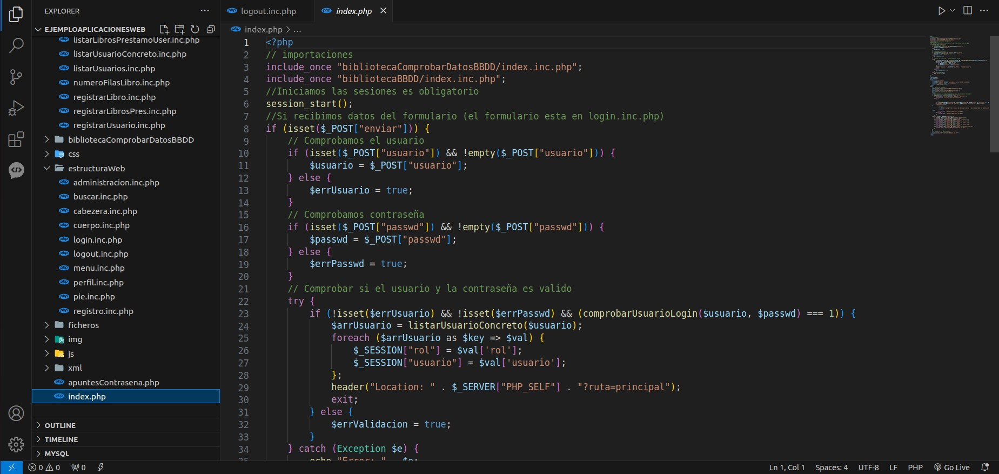
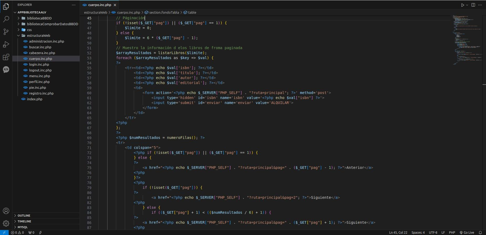

Imagenes
Explicación
- 1.0. Descripción
- 1.1. Iniciar Sesión (Principal)
- 1.2. Registro
- 1.3. Inicio
- 1.4. Buscador
- 1.5. Perfil
- 1.6. Cerrar Sesión
- 1.7. Administración
- 2.0. Herramientas para la Elaboración de la Biblioteca
- 2.1. Lenguajes
- 2.2. Base de Datos
- 2.3. Despliegue de la Aplicación
- 3.0. Bibliotecas de Funciones
- 4.0. Explicación del Código
- 5.0. Enlace al Repositorio de GitHub
1.0. Descripción
La aplicación Biblioteca ALV es una aplicación de alquiler de libros. Donde tienes diferentes apartados y roles. Al iniciar la aplicación se te muestra una pantalla de inicio de sesión donde tienes la posibilidad de iniciar sesión para entrar a la aplicación siempre que tengas una cuenta registrada o la otra opción es registrarte donde te envía a un formulario donde tienes que rellenar con los datos pedidos y si son correctos te envía al inicio de sesión, donde ya podrás logearte para disfrutas de la aplicación. Dependiendo del rol que tengas que puede ser lector o administrador se te cambiara el menú de opciones adecuándose al rol que tengas. En el rol de lector tienes los apartados de Inicio, Buscador, Perfil y Cerrar sesión, y en el rol administrador tiene los apartados anteriores más el apartado correspondiente a la administración llamado Administración.
1.1. Iniciar Sesión (Principal)
La página inicial de la aplicación es un login donde podrás logearte siempre que tengas una cuenta en la biblioteca, en el caso de no tener cuenta te mostrara un mensaje en rojo indicando que el usuario u o la contraseña o ambos son incorrectos, en el caso de tener una cuenta pero equivocarte en el usuario u o en la contraseña te mostrara un mensaje en rojo indicando que ese campo es incorrecto. En caso de no tener una cuenta hay un botón donde puedes registrarte para luego poder iniciar sesión en la aplicación.

1.2. Registro
La página de registro de acede desde la página principal de inicio de sesión. La página de registro es un formulario donde tienes marcados con un asterisco en rojo los campos que son obligatorios, los campos que pedimos obligatorios al usuario son el nombre, el primer apellido, el email, el nombre del usuario con el que te vas a logear y la contraseña, en el caso de que el usuario ya exista se te mostrara un mensaje diciendo que el usuario ya existe, el apartado opcional es el segundo apellido. Los datos obligatorios en caso de no ser rellenados te mostrara una alerta y después un mensaje en rojo indicando que campos son obligatorios o has escrito de forma incorrecta. Una vez ya registrado cunado le des al botón de registrar te enviara a una página de confirmación donde si los datos son correctos te redirige a la página principal de inicio de sesión y en caso de ser incorrectos otra vez al formulario, en caso de haberte equivocado y darle son querer en el apartado de registrar podrás volver a la página principal de inicio de sesión.
1.3. Inicio
En el apartado de inicio podemos ver los libros que tenemos disponibles y que no están alquilados. Los libros se muestra de forma paginada cada 6 libros, cada libro tiene la información del ISBN, el titulo del libro, el autor del libro y la editorial. En cada libro a la derecha de la información correspondiente tenemos un botón de alquilar donde podremos alquilar los libros, por defecto cuando alquilas un libro tienes 30 días desde que lo alquilas para poder leértelo, esa información se le da al usuario mediante una alerta.
1.4. Buscador
En el apartado de buscador podemos buscar libros mediante los atributos del libro que son el ISBN, el titulo del libro, el autor del libro y la editorial. El buscador te permite poder poner todo el nombre o una parte, con el buscador puedes filtrar por los cuatro campos o ir disminuyendo los campos hasta que solo tengas uno, en caso de darle a buscar sin poner ningún parámetro te mostrara un aviso que es obligatorio poner parámetros o en el caso de que ya este alquilado que ya esta alquilado. Una vez que hayas buscado un libro igual que en la página de inicio a la derecha de la información tendrás un botón donde podrás alquilar ese libro con las mismas condiciones que en el inicio que son 30 días para leer el libro, esa información se le da al usuario mediante una alerta.

1.5. Perfil
En el apartado de perfil podemos observar los datos del usuario que son el nombre, el primer apellido, el segundo apellido, el email, el usuario y la contraseña que por seguridad no esta reflejada sino que se muestra a cambio ocho asteriscos, a continuación tienes una series de funciones que son poder editar los datos, darse de baja en la aplicación o cerrar sesión que cuando pinchas en el botón de cerrar sesión automáticamente te cierra la sesión y te devuelve a la página para iniciar sesión. Por ultimo muestra todos los libros que tienes alquilados con la posibilidad de poder devolverlos antes de los 30 días que de cuando alquilaste el libro que el dato de la fecha de fin de préstamo aparece para facilitar al usuario cuando se termina el alquiler del libro.

1.6. Cerrar Sesión
En el apartado cerrar sesión automáticamente cuando pinchas en el apartado te cierra la sesión y te devuelve a la página para iniciar sesión.
1.7. Administración
En el apartado de administración solo esta disponible para los administradores. En este apartado podrás realizar diferentes funciones como ver los libros que hay con la opción de poder eliminarlos, ver la información de un usuario en especifico pero sin poder ver la contraseña por tema de seguridad y privacidad de datos, poder eliminar un usuario en especifico, poder cambiar la contraseña a un usuario en especifico y crear libros.


2.0. Herramientas para la Elaboración de la Biblioteca
En este apartado explico que lenguajes de programación he utilizado, que base de datos que he utilizado y donde he desplegado la aplicación.
2.1. Lenguajes
He utilizado los siguientes lenguajes de programación:
- PHP. Este es el lenguaje principal de mi página web donde realizo toda la lógica del programa.
- HTML5. Este es el lenguaje principal donde estructuro mi página
- JAVASCRIPT. Este es el lenguaje principal donde muestro alertas a los usuarios.
- CSS3. Este es el lenguaje principal donde doy estilo a mi página web.
2.2. Base de Datos
La base de datos utilizada ha sido MySQL, con el gestor de base de datos phpMyAdmin. En esta base de datos esta separada en tres tablas una tabla que es usuarios donde almacenamos los datos de los usuarios, otra tabla que es libros donde almacenamos los datos de los libros y la ultima tabla que es prestamos donde tendremos el id de usuario que ha hecho el préstamo y el id del libro que ha solicitado el préstamo junto a la fecha de fin de préstamo
2.3. Despliegue de la Aplicación
He desplegado la aplicación en el entorno XAMPP por la versatilidad que nos ofrece al incluir la base de datos MySQL, el lenguaje de programación php y el servicio apache para el despliegue de la aplicación.
3.0. Bibliotecas de Funciones
En la biblioteca tengo dos bibliotecas de funciones una para comprobar los datos y otra para las conexión y query de la base de datos para obtener los datos o almacenar datos o eliminar datos.
En ambas biblioteca he utilizado la metodología de barril que consiste en crear un archivo index.inc.php donde realizo los includes de las funciones que hay cada una en su respectivo biblioteca es decir en la biblioteca comprobar datos tiene un index.inc.php con todas las funciones de comprobar datos y la biblioteca de base de datos donde tiene su index.inc.php que esta todos los includes de las funciones de base de datos. La ventaja al hacer esto es que solo tengo que hacer dos includes para tener todas las funciones tanto de comprobar datos como de base de datos a si no tener que poner el include de cada función.
4.0. Explicación del Código
En el index.php trato que páginas se muestra y la creación de las sesiones. Individualmente cada apartado trato sus datos enviados en el formulario si tiene formulario para una mayor legibilidad del código.
Archivo login.inc.php
Archivo index.php

Para listar los libros he utilizado paginación, la paginación la he utilizado en el archivo cuerpo.inc.php para que el usuario le sea más cómodo poder ver los libros.
Archivo listarLibros.inc.php
Archivo cuerpo.inc.php
He realizado un buscador avanzado donde podrás buscar los libros según su campo donde tiene los campos: titulo del libro, autor del libro, editorial del libro, y el ISBN del libro. Puedes buscar desde un solo campo, dos campos, tres campos o los cuatro campos, para la búsqueda no necesita poner el nombre completo del libro, el nombre completo del autor, el nombre completo de la editorial o el ISBN completo, con una parte ya lo busca.
Archivo buscarLibrosAdmin.inc.php
La única diferencia es que te busca todos los libros estén en préstamo o no.
Archivo buscar.inc.php
Archivo administracion.inc.php
Muestra visual de como se vería el buscador avanzado del usuario.

Muestra de como se vería el buscador avanzado del administrador.
Las sesiones la controlo en el index.php mediante el login de login.inc.php que hasta que los datos no sean correctos y este en la base de datos registrado no puede entrar. Este tratamiento tanto el login como las sesiones lo trato en en el index.php.
Muestra de como se vería si no has iniciado sesión he intentas entrar a una página.
Para cerrar sesión a parte de un mensaje comunicativo diciendo que se ha cerrado la sesión correctamente mediante JavaScript con un alert realizo la respectiva eliminacion de todos los datos de las sesiones para su eliminación completa.
Para las validaciones de los datos he utilizado expresiones regulares como las siguientes.
Para mostrar información al usuario si se ha hecho bien las cosas como por ejemplo el alquiler correcto de un libro o los mensajes de que un campo del login o del formulario de registro esta mal he utilizado varias formas adaptandome a lo que el usuario pueda tener una mejor experiencia de uso, los dos metodos que he utilizado que son un alert con JavaScript y el mostrar una etiqueta p de HTML con la información necesaria.
Código de alert.
Código de la etiqueta p de HTML para los errores.